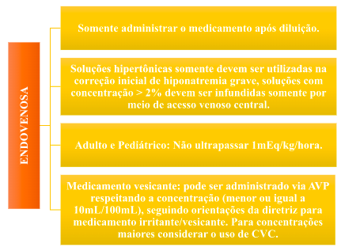
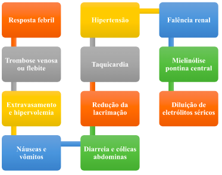

Potássio – Cloreto de potássio
Sumário:
- Apresentação da droga
- Cloreto de sódio – NACL
- Apresentação
- Indicação
- Contraindicação
- Cuidados específicos e monitoramento
- Dose
- Via de administração
- Administração
- Interação medicamentosa
- Efeitos adversos
- Estabilidade/Conservação
- Toxicologia
- Uso durante a gestação
- Cloreto de potássio - KCL
- Hipocloremia
- Hipercloremia
Apresentação da droga
Entre as causas das alterações do cloro estão aquelas relacionadas ao sódio, pois estes têm estreita relação entre si. No entanto, existem alterações no cloro independentes dos níveis de sódio, as quais estão relacionadas com o equilíbrio ácido básico.
Para a correção da hipocloremia é orientado a administração de líquidos ricos em cloreto, podendo assim ser utilizado a suplementação tanto do cloreto de sódio como do cloreto de potássio, se indicado
Cloreto de sódio – NaCl
Indicação
Contraindicação

- Hipersensibilidade aos componentes da droga, em casos de hipernatremia, retenção hídrica e hipercloremia.
Cuidados Específicos e monitoramento

A solução injetável contendo cloreto de sódio deve ser administrada com cautela em pacientes com hipertensão, insuficiência cardíaca congestiva, nefropatias, com pré-eclampsia, edema pulmonar e obstrução do trato urinário.
Não é aconselhado que a concentração sérica de sódio do paciente aumente ou diminua mais do que 12mEq/L de correção em 24 horas, devido ao risco de síndrome desmielinizante no caso de correção demasiadamente rápida para hiponatremia e de edema cerebral na correção da hipernatremia. Em geral, em casos sintomáticos, um aumento na concentração de 4 a 6 mEq/L é satisfatório para controlar os sintomas.
Dose
A administração é definida de acordo com as necessidades individuais de cada paciente.
Antes de serem administradas, as soluções parenterais devem ser inspecionadas visualmente para se observar a presença de partículas, turvação na solução, fissuras e quaisquer violações na embalagem primária.
Via de administração
Interação medicamentosa
- Há incompatibilidade desta solução com anfotericina B, ocorrendo precipitação desta substância e com o glucagon. Consultar um farmacêutico sempre que necessário.
- Aconselha-se cautela em pacientes tratados com lítio.
- Alguns medicamentos, principalmente corticosteróides, podem reagir com este produto, aumentando seus efeitos adversos.
Efeitos adversos
Estabilidade/Conservação
- A solução injetável de cloreto de sódio tem duração de 24 horas em temperatura ambiente (entre 15°C e 30°C).
- É uma solução estéril e apirogênica, logo, não proceda em hipótese alguma a guarda e/ou conservação de volumes restantes das soluções utilizadas, devendo as mesmas serem descartadas.
Toxicologia
- A toxicidade relacionada ao cloro está, na maioria dos casos, relacionada ao aumento rápido das concentrações séricas de cloro.
- O monitoramento de cloro e a avaliação do paciente são extremamente importantes.

Uso durante a gestação

Categoria C: Não há estudos suficientes para certificar a segurança do medicamento durante a gravidez. O medicamento deve ser administrado apenas se o benefício potencial justificar o risco.